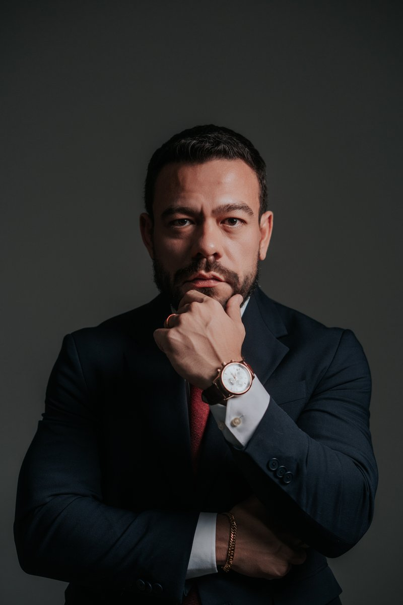

Defesa criminal estratégica em prisões, inquéritos, ações penais, audiências, habeas corpus, recursos, revisão criminal, execução penal e tribunais superiores.
Atuação também especializada em processos de tráfico de drogas, busca ilegal, abordagem policial e nulidades criminais.
Acompanhamento imediato após a prisão
Presença na hora do depoimento
Defesa nas primeiras 24h após prisão
Pedidos de soltura e revogação
Defesa técnica especializada
Atuação estratégica desde o início
Combate a provas obtidas ilegalmente
Questionamento de abusos e ilegalidades
Você ou um familiar está numa dessas situações?
Fale com um advogado criminalista e entenda os próximos passos.
Atuação criminalista completa, em diversas naturezas de crime
Homicídio, tentativa de homicídio, lesão corporal, ameaça e crimes contra a honra.
Furto, roubo, estelionato, receptação, apropriação indébita e extorsão.
Defesa em medidas protetivas, audiências, ações penais e análise de provas.
Embriaguez ao volante, lesão corporal no trânsito e homicídio culposo.
Defesa em investigações e processos criminais eleitorais.
Tráfico, associação para o tráfico, busca ilegal, abordagem policial e prova ilícita.
Atuação completa e estratégica em todas as áreas do direito criminal
Atuação ágil em pedidos de habeas corpus, com fundamentação técnica contra prisões indevidas e arbitrárias. Análise minuciosa para identificar ilegalidades e construir a melhor estratégia de defesa pela liberdade do cliente.
Estratégia de defesa personalizada em todas as fases do processo penal: do inquérito policial à ação penal, com produção de provas, sustentação oral nas audiências e interposição de recursos quando necessário.
Atuação direta no STJ e STF para revisar sentenças injustas, penas excessivas ou baseadas em erros jurídicos. Protocolamos e acompanhamos pessoalmente recursos especiais e habeas corpus nos tribunais superiores em Brasília.
Acompanhamento técnico durante o cumprimento da pena, com pedidos de progressão de regime, livramento condicional, remição e defesa em casos de falta grave — garantindo o cumprimento justo da sentença.

Advogado criminalista atuando desde 2015 em defesa penal, com experiência sólida em todas as fases do processo criminal. Atuação marcada por forte presença em casos de tráfico de drogas, habeas corpus e recursos criminais, com atuação direta nos tribunais superiores em Brasília.
A confiança de quem encontrou uma defesa técnica em momentos difíceis
Dr. Igor foi fundamental no momento mais difícil da minha vida. Profissional excepcional, atendimento rápido e defesa técnica impecável.
Atendimento humano e altamente competente. Explicou tudo de forma clara, sem juridiquês, e atuou com firmeza no processo. Recomendo.
Defesa técnica de altíssimo nível. Profissional ético, transparente e comprometido. Acompanhamento próximo durante todo o processo.
* Depoimentos reais de clientes. Cada caso é único e os resultados dependem das particularidades de cada processo. Em conformidade com o Código de Ética e Disciplina da OAB, não há promessa ou garantia de resultados.
Respostas claras para as principais dúvidas sobre direito criminal
Aja imediatamente. Nas primeiras 24 horas após a prisão acontece a audiência de custódia, momento crucial para a defesa. O ideal é contratar um advogado criminalista o quanto antes para acompanhar o caso desde o início — desde o depoimento na delegacia até a audiência de custódia. Quanto mais cedo a defesa atuar, melhores as chances de relaxamento da prisão ou liberdade provisória.
O habeas corpus é uma ação constitucional usada para questionar prisões ilegais, abusivas ou arbitrárias. Pode ser usado para pedir a liberdade de quem está preso indevidamente, trancar inquéritos sem fundamentação, ou combater ilegalidades em qualquer fase do processo. Atuamos em habeas corpus em todas as instâncias, inclusive nos tribunais superiores (STJ e STF) em Brasília.
Sim, por meio da revisão criminal. Esse instrumento permite revisar sentenças condenatórias quando há provas novas, erros jurídicos graves, sentença contrária à lei ou à evidência dos autos. A revisão criminal pode ser interposta a qualquer tempo, inclusive após o cumprimento da pena. Cada caso é analisado individualmente para identificar fundamentos válidos.
A atuação física é em Boa Vista – Roraima, mas também atendemos casos em todo o Brasil, com destaque para os tribunais superiores em Brasília (STJ e STF). Para casos fora de Roraima, o atendimento inicial pode ser feito por WhatsApp ou videoconferência, com deslocamento conforme a necessidade do caso.
Para uma primeira análise, qualquer documento relacionado ao caso já ajuda: boletim de ocorrência, auto de prisão em flagrante, intimações, decisões judiciais, número do processo (se houver), ou simplesmente um relato detalhado da situação. Se ainda não há nenhum documento (por exemplo, em casos recém-acontecidos), pode entrar em contato mesmo assim — orientamos sobre os próximos passos.
A progressão de regime é o direito do condenado de passar do regime mais severo (fechado) para o mais brando (semiaberto e depois aberto), conforme o cumprimento de parte da pena e o bom comportamento. Os percentuais variam conforme o tipo de crime e os antecedentes. Atuamos no acompanhamento da execução penal, pedindo progressão, livramento condicional, remição e defendendo o cliente em casos de falta grave.
O valor varia conforme a complexidade do caso e o tipo de atuação necessária. Em conformidade com o Código de Ética da OAB, não divulgamos tabelas de preços publicamente. Entre em contato pelo WhatsApp para uma análise inicial do seu caso e proposta personalizada.
Atuação em inquéritos, ações penais e recursos envolvendo crimes contra a pessoa, patrimônio, Lei Maria da Penha, crimes de trânsito, crimes eleitorais, tráfico de drogas, execução penal e outras demandas criminais.
Sim. A atuação desde o inquérito ou desde a primeira intimação pode ajudar na organização da defesa, análise das provas e prevenção de prejuízos processuais.
Sim. A legalidade da abordagem, da busca pessoal, veicular ou domiciliar pode ser analisada conforme os elementos do caso concreto.
Sim. A atuação pode envolver apelação criminal, habeas corpus, recurso especial, agravos, revisão criminal e medidas perante tribunais superiores.
Atendimento presencial em Boa Vista – RR e digital para todo o Brasil
Presencial: Seg a Sex, das 8h às 18h
WhatsApp: 24 horas, todos os dias
Fale agora com um advogado criminalista e receba orientação jurídica. Atendimento por WhatsApp em Boa Vista – RR e em todo o Brasil.
Falar com o advogado